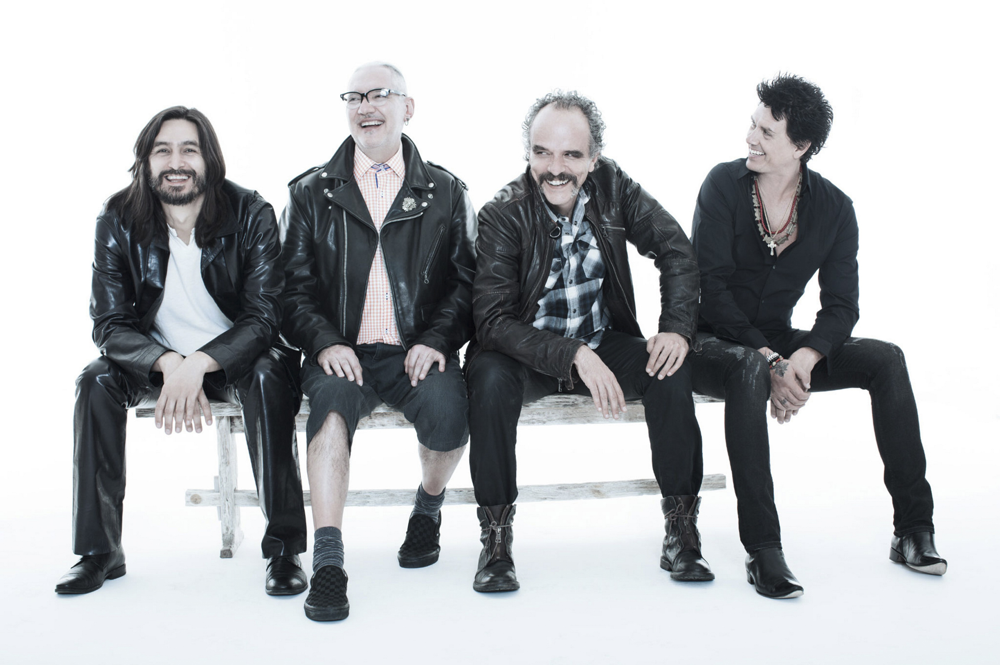
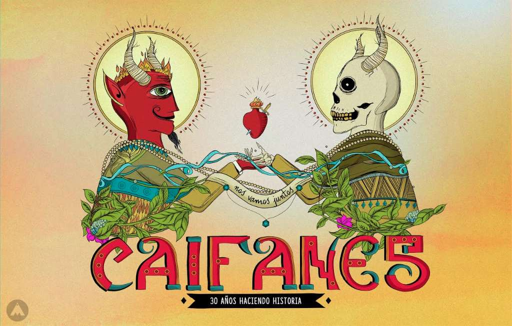
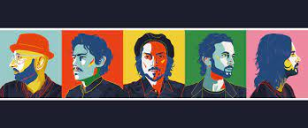
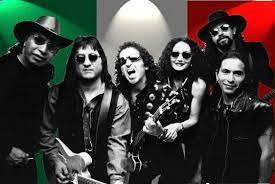
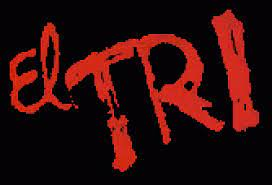

| Bandas Mexicanas |
| Nombre de la banda |
Integrantes |
Resumen |
Video ejemplo, de su musica |
Mas de su historia |
| Caifanes |
Saúl Hernández, Sabo Romo, Alejandro Marcovich, Alfonso Andre, Diego Herrera, Yann Zaragoza, Juan Carlos Novelo y Santiago Ojeda |
Saúl Hernández junto con Diego Herrera estaban planeando un proyecto musical al que denominaron Caifanes. ... Caifanes fue conformado originalmente en enero de 1987 por: Saúl Hernández (voz y guitarra), Sabo Romo (bajo eléctrico), Diego Herrera (teclados y saxofón), y Juan Carlos Novelo (batería). |
 |
 |
| ZOE |
León Larregui, Siddhartha, Sergio Acosta, Rodrigo Guardiola, Ángel Mosqueda, Jesús Báez y Alberto Cabrera |
Zoé es una banda mexicana de rock formada en 1997 en Cuernavaca, México. La banda es liderada por León Larregui y conformada por Sergio Acosta, Jesús Báez, Ángel Mosqueda y Rodrigo Guardiola. El grupo tiene influencias del Rock Psicodélico, Baladas románticas, y del Pop Rock. |
 |
 |
| El TRI |
Oscar Zárate, Eduardo Chico: Guitarra
Ramón Pérez: Batría
Alex Lora: Guitarra y Voz
Rafael Salgado: Armonía
Carlos Valerio: Bajo
Lalo Toral: Piano
Chela Lora: Coros
Alex Álvarez: Violín |
Surgiendo a finales de los 60’s Alex Lora y su grupo originalmente llamado Three Souls in my Mind, se convirtió en el grupo pionero de rocanrol original en español. En sus inicios la mayoría de sus composiciones fueron echas en inglés. En su tercer álbum decidieron componer sólo en español pues era importante que la gente entendiera el mensaje de sus canciones. Cantando en su lenguaje original Alex Lora le dio su propia identidad al rocanrol hecho en México convirtiéndose en su bandera.En 1971 participaron en el festival de Avándaro (nuestro “Woodstock Mexicano”) al cual asistieron más de trescientas mil personas, concierto que hizo historia en México, al igual que en la trayectoria del grupo. |
 |
 |